北宋军事史与历史 GIS
七幅区域级地图：庆历三战 3 幅 3200×1800，五路伐夏 4 幅 3840×2160，含数据、审计与修订记录。
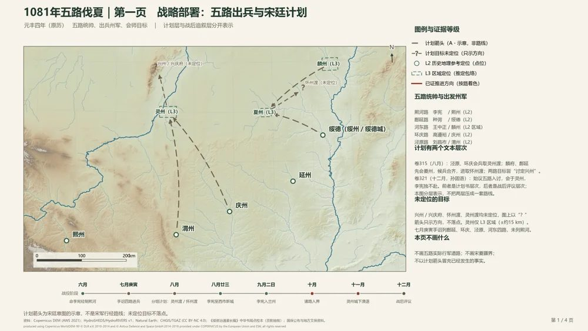
厦门大学 · 历史与文化遗产学院 · 历史学（强基）
历史学 × AI Agent × 历史 GIS × 数字人文实践
从一条记载、一处地名、一次核验开始，
尝试让技术进入历史研究的具体问题。
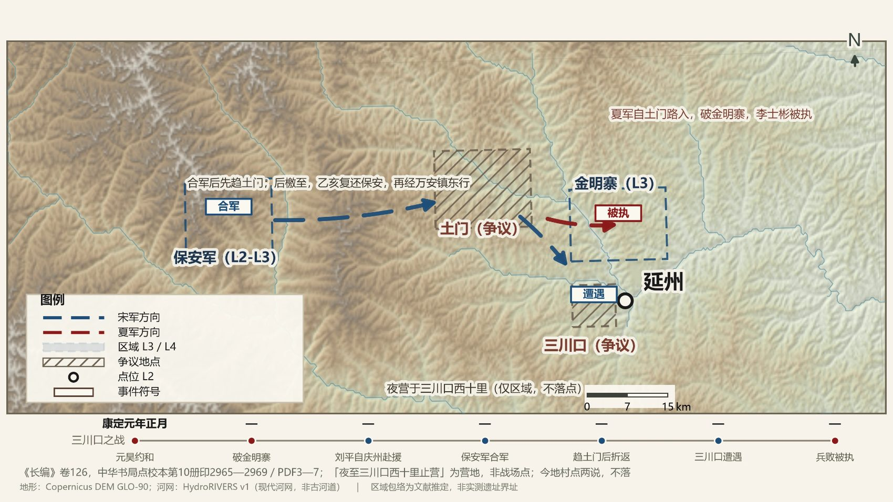
四个入口，一条研究线索
每个项目都对应真实文件、真实截图和可复查的记录；未完成的部分单独标注。
七幅区域级地图：庆历三战 3 幅 3200×1800，五路伐夏 4 幅 3840×2160，含数据、审计与修订记录。

好水川驻屯对调、五路伐夏卷册定位、西市新城里程三项真实修订，保留修正日志而非覆盖原件。
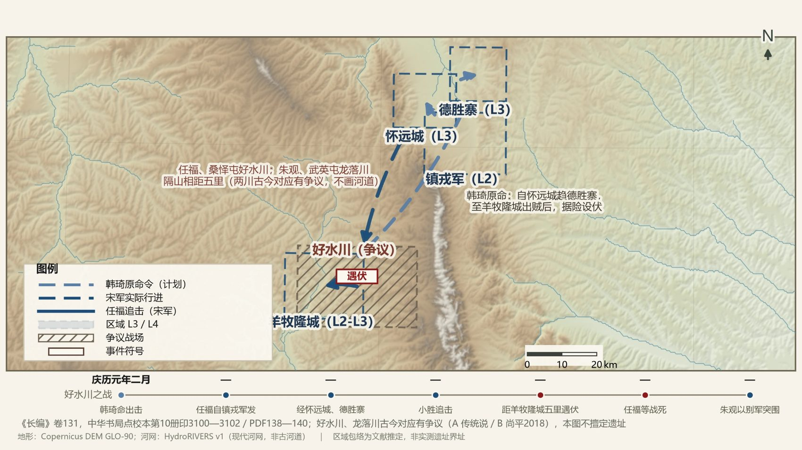
修订前图面（工程 v001）；修订后的图面见后一页
569 行交战目录、四层审核状态、严格 135 / 扩展 175 待审样本；Codex、DSH、豆包、Kimi 四组同一输入的有限对照。
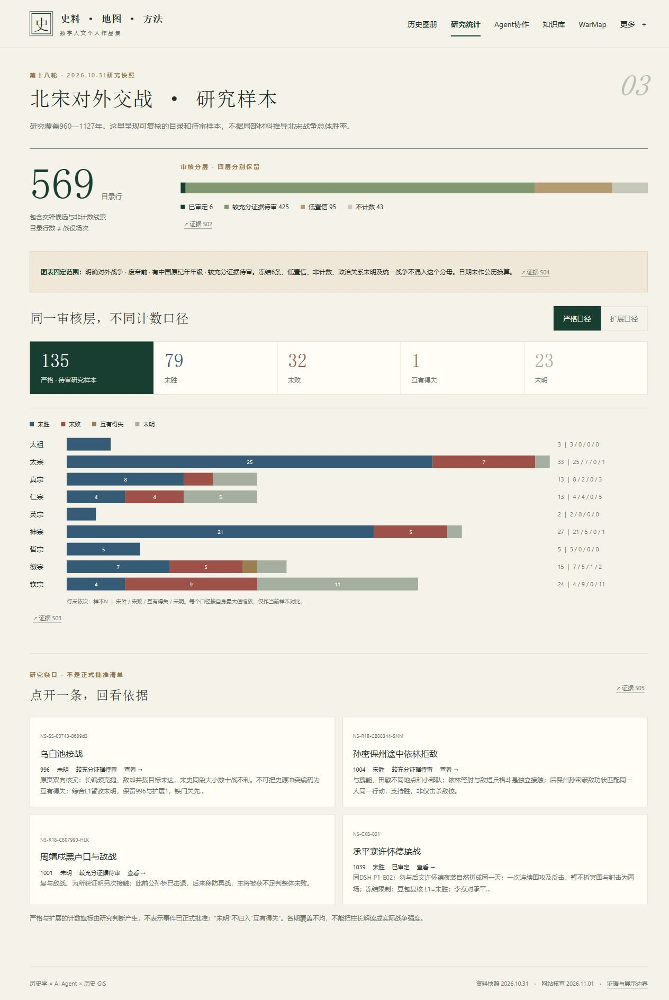
Obsidian 九类真实目录；Kimi 编译的 WarMap 三个战争分区、67 条战役记录，本轮接入真实与离线两套底图。
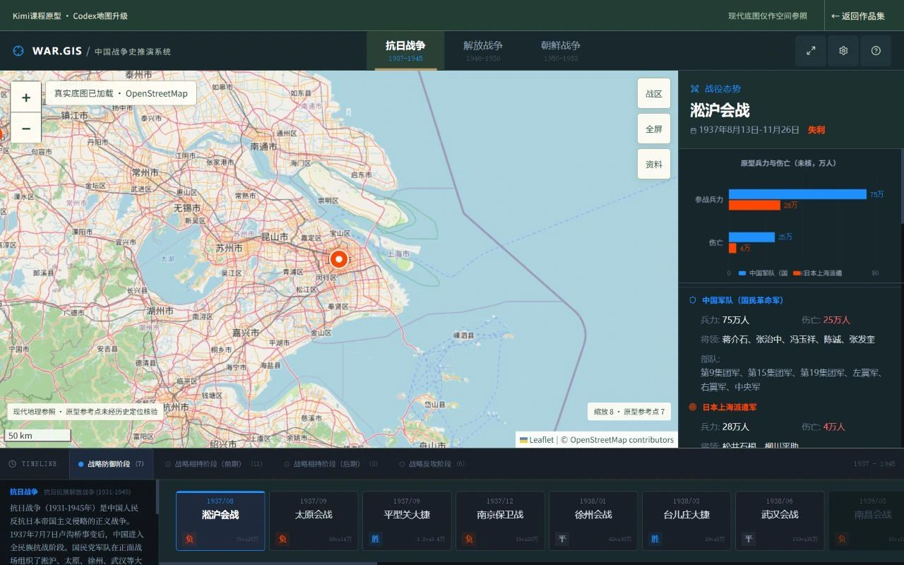
庆历三战 · 1040—1042
现代 DEM 与河网辅助下的区域态势图；箭头非行军道路，争议地名保留区域范围而非单点。
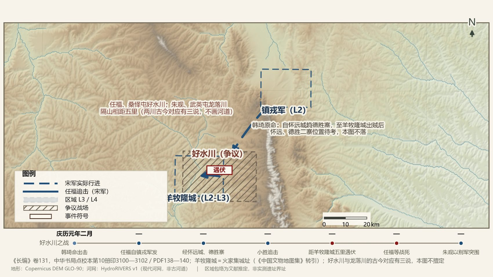
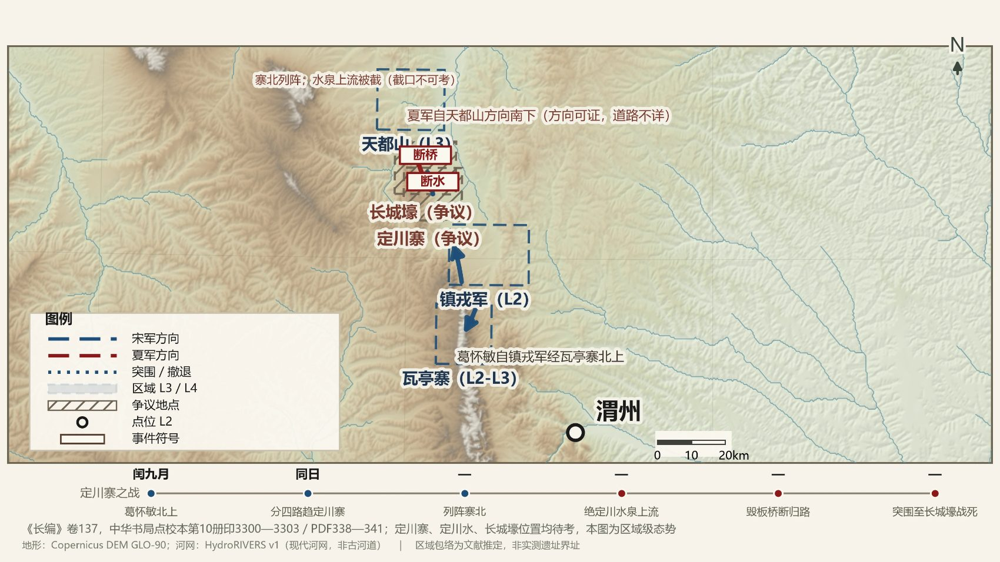
五路伐夏 · 1081 · 第六阶段
冻结初稿，非最终独立审定成果；每幅保留来源、状态与复核报告。
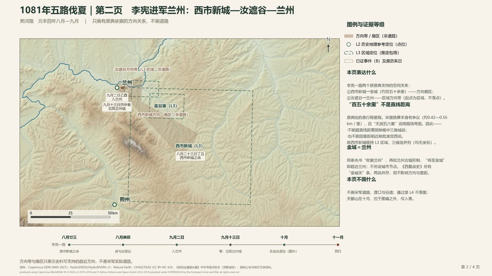
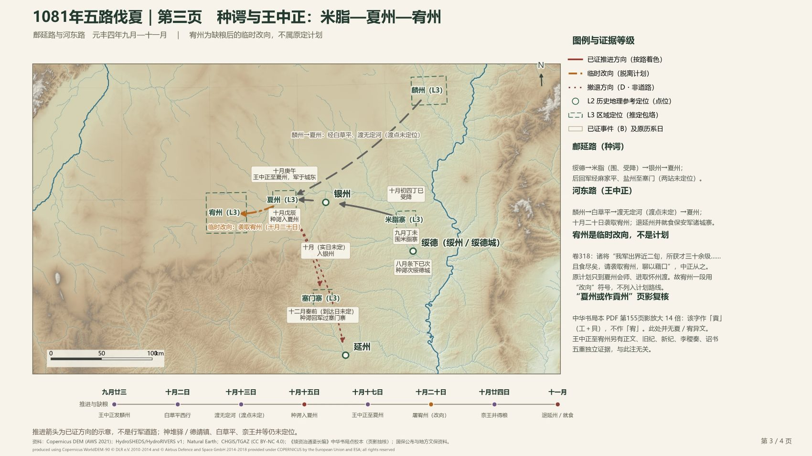
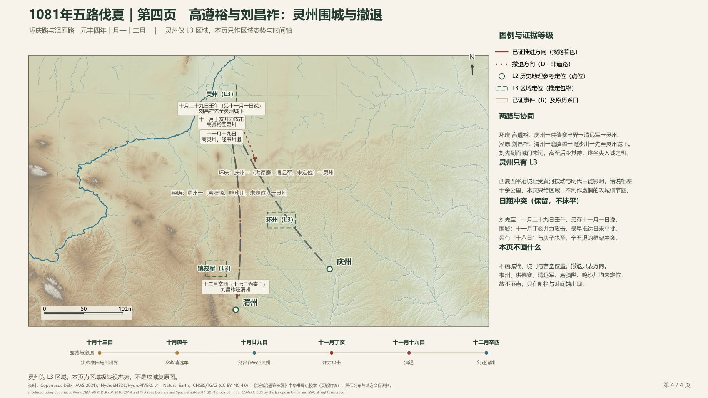
方法展台
比“画出来”更重要的是：每一步依据什么，出现疑点时怎样退回材料。
审计发现两军驻屯位置与史源不符；核对原书与行动端点后对调，旧图面独立保留。
先确定阶段与卷册归属，再回到出处定位，避免把不同阶段的记载混为一图。
里程数据只能支持行程范围，不能支撑单点定位；因此不强行给出坐标。
第十八轮 · 2026.10.31 研究快照
呈现可复核的目录与待审样本，不据局部材料推导北宋战争总体胜率。
创新实践 · 协作与核验
分工随项目阶段变化；重要的是任务如何交接、错误如何暴露、成果如何保留。
版本调查、底图接入、局部修复、界面适配与网站集成。
史料核验、副本修订、离线底图、PWA 离线缓存与部署验收。
第六阶段初稿制图与逐表核对，产出被单独保留并接受审计。
WarMap 原型生成与课程讲解；编译产物作为本次升级基底。
| 项目 | Codex | DSH | 豆包 | Kimi |
|---|---|---|---|---|
| 输入 / 提示词核对 | 119 份 · 一致 | 119 份 · 一致 | 119 份 · 一致 | 119 份 · 一致 |
| 实际交付 | 报告／结果 JSON／脚本 | 报告／结果 JSON／脚本 | 报告／结果 JSON／脚本 | 机器 JSON／脚本，终稿未找到 |
| 可直接绘路线？ | 结论：不可 | 结论：不可 | 结论：不可 | 不作完整答卷结论 |
基于真实目录绘制 · 结构示意
把资料、阅读、核验与个人理解放到合适的位置，让下一次研究能接着做。
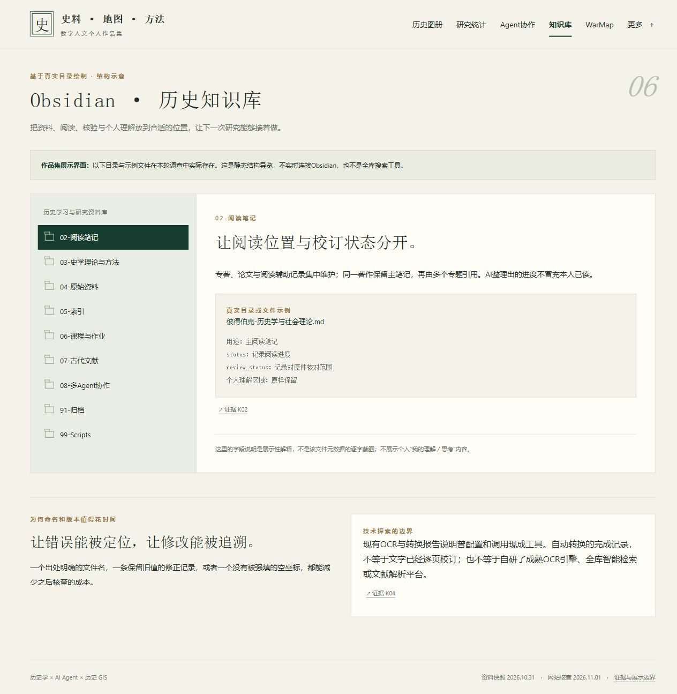
技术边界：现有 OCR 与格式转换报告说明曾配置和调用现成工具；自动转换完成不等于文字已逐页校订，也不等于自研 OCR 引擎或全库检索。
Kimi 课程原型 · Codex 地图升级 · DSH 离线底图
团队课程项目：保留 Kimi 编译版全部业务，在独立副本中接入真实底图与离线底图。
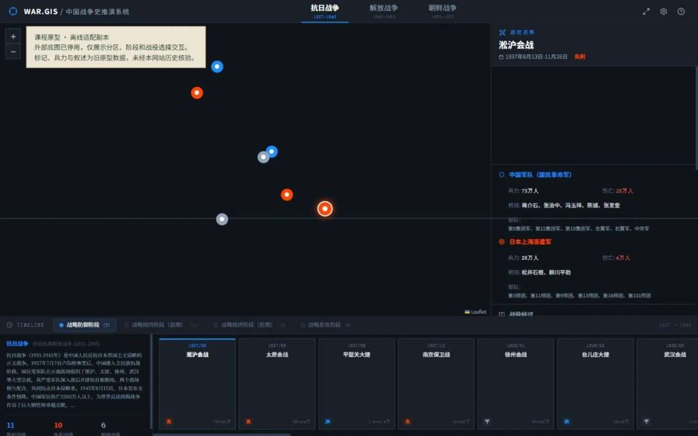
用户自述 · 无虚构现场图片
这两段经历与网站中的技术成果分开展示：个人扫描与学习参访，不是正式馆方实习。
准备厦门大学历史学强基计划考试期间，在浙江省档案馆借阅《中国历史文选》，完成上下两册 PDF 数字化扫描。
关注页序、文件完整性与之后的资料使用；扫描件不随作品集复制。
暂缺证据参加历史学强基班田野调查社会实践期间，参观四川省档案馆，了解档案管理、申请调取及部分数字化工作。
本轮未取得可独立佐证的现场照片，采用文字时间线呈现。
暂缺证据来源索引 · 2026.11.01 核查
每件展品都有来源，每项判断都保留范围；网页只显示脱敏文件名。
本轮核到对应文件、数值或运行证据。
存在可展示产物，但研究、审批或独立验收尚有边界。
配置、调用与技术试验，不宣称成熟产品能力。
采用用户自述或尚缺独立实物，不伪造补齐。
感谢参观 · 接下来的问题
我希望带进团队的，是从历史问题出发、组织具体任务、
检查成果并继续修正的实践经验。